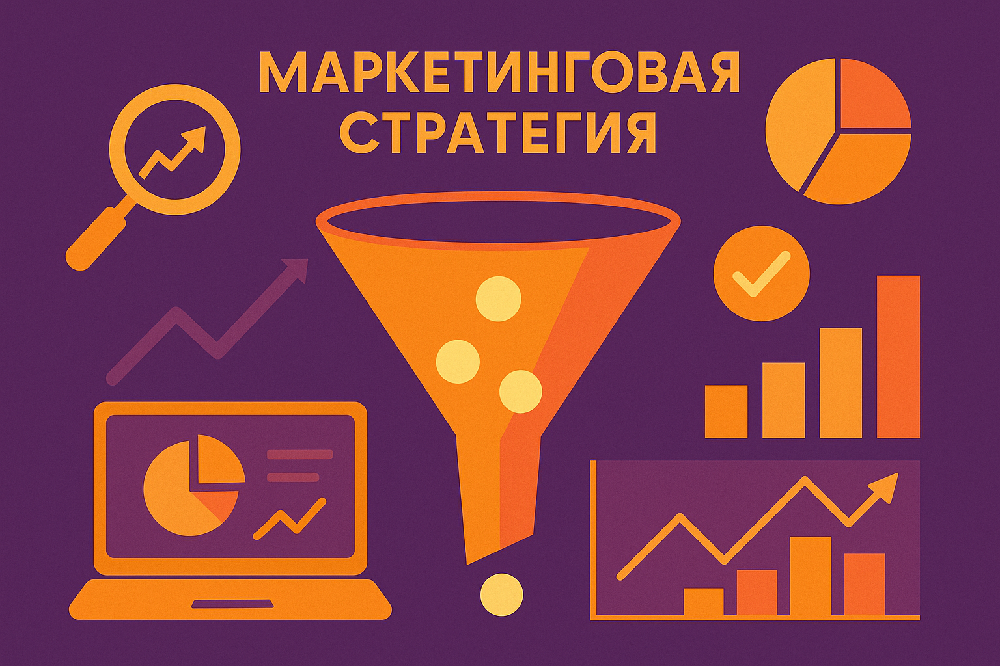

Как выбрать стратегию digital‑маркетинга
Прежде чем запускать рекламные кампании, важно определить цель и понять, какие каналы принесут наибольшую отдачу. В этой статье рассмотрим ключевые этапы выбора стратегии digital‑маркетинга.
1. Определите цели
Начните с постановки измеримых целей: увеличение продаж, рост узнаваемости, привлечение лидов. Без понятной цели вы не сможете оценивать эффективность маркетинга.
2. Изучите аудиторию
Сегментируйте клиентов по возрасту, интересам, потребностям. Чем точнее вы знаете свою аудиторию, тем лучше сможете настроить рекламу и подобрать контент.
3. Выберите каналы
SEO хорошо подходит для долгосрочного роста, контекстная реклама дает мгновенный результат, а SMM помогает выстраивать отношения с аудиторией. Не забывайте про аналитические инструменты.
4. Заложите бюджет и ресурсы
Реалистично оценивайте бюджет на рекламу и время команды. Планируйте тестирование гипотез и корректировку кампаний.
5. Настройте аналитику
Установите счётчики, настройте цели и воронки. Это позволит измерять эффективность каналов и корректировать стратегию по данным.
Грамотная стратегия — это залог успешного digital‑маркетинга. Если нужна помощь, наши эксперты готовы разработать индивидуальный план.